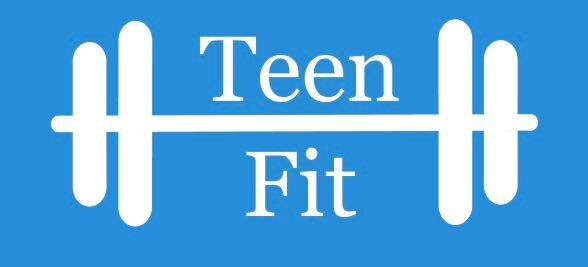

<ion-header>
  <ion-toolbar color="primary">
    <ion-title>
      Home
    </ion-title>

  </ion-toolbar>
</ion-header>

<ion-content color="primary">
    
   <h1 class="h1">
     Day 7
   </h1>
   <p style=color:#ffffff class="pie"> 
30 push ups by 1 pm.
   </p>
   <p style=color:#ffffff class="pie"> 
     1 hr left to rest.
         </p>
         <p style=color:#ffffff class="pie"> 
           25 minutes of cardio
                </p>
</ion-content>


